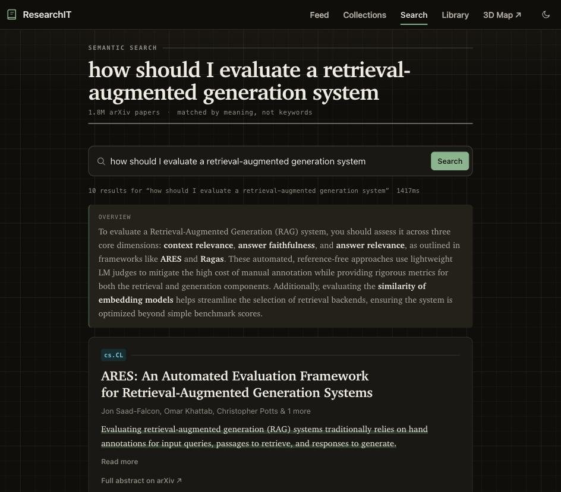

01 / INDEPENDENT PROJECT · 2025—NOW
ResearchIT
A paper feed for more than one interest.
I wanted recommendations that could make room for both language models and robotics. ResearchIT combines paper search with a reading feed shaped by the papers you save.
My part Solo design, data pipeline, search, recommendations, deployment, and evaluation.
- 1.85M
- papers indexed¹
- 877 → 288 ms
- median lexical-search time²
A decision that mattered A balanced candidate pool could still produce a one-sided feed. I changed the final ordering to preserve room for each interest.

¹ Corpus recorded 24 October 2026. Corpus source ↗ ² Dated lexical-search evaluation, not end-to-end live latency. Measurement ↗
ONE DESIGN PROBLEM, IN TEN CARDS
What happens to your other interest?
Suppose you read about AI and robotics. A feed can look relevant while quietly dropping one of them.
A simplified illustration. This is not a live recommendation or a benchmark.
- 01AI
- 02Robotics
- 03AI
- 04Robotics
- 05AI
- 06Robotics
- 07AI
- 08Robotics
- 09AI
- 10Robotics
5 AI papers. 5 robotics papers. Both interests get a place.
Inside ResearchIT Problem, decisions & engineering
A feed for a person
with more than one interest.
Designed, built, deployed, and evaluated independently.
Why I built it
Save papers about language models and robotics, and a single averaged profile can lose what made each interest distinct. I wanted recommendations that made room for both.
What I learned
Balancing the candidate pool isn’t enough. The final ordering matters too. Interest quotas and diversity within each interest help keep one topic from taking over.
“How should I evaluate a retrieval-augmented generation system?”
Run this example ↗The engineering, if you’re curious +
BGE-M3 retrieves semantic neighbors from Qdrant. SQLite FTS5 adds lexical matches. Reciprocal rank fusion brings the lists together, and a cross-encoder reranks a small candidate set.
The discovery feed uses saved-paper interests, quota allocation, and diversity within each interest. The default feed scorer is heuristic; the optional learned model is a separate experiment.
Measurements describe specific evaluation conditions; they aren’t promises about every live query.